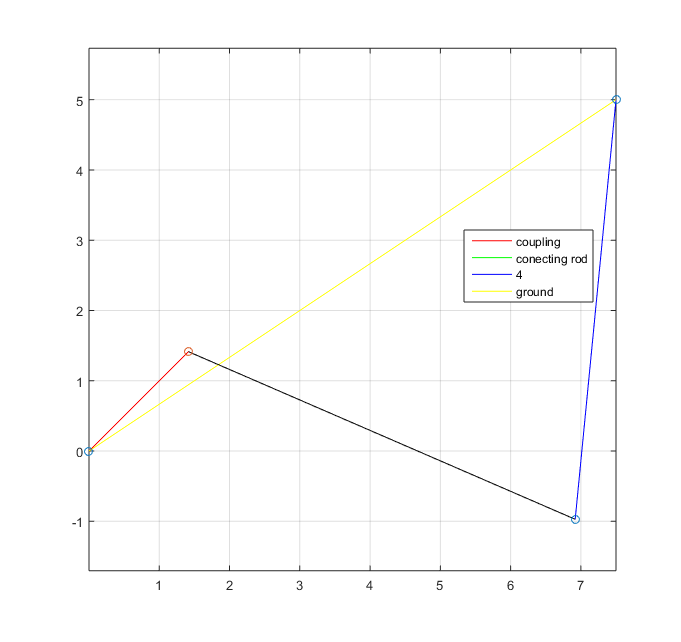
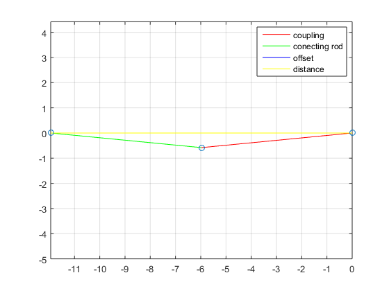

Contents
HW 7 #4
clear; clc;
Given
r1x = 7.5;
r1y = 5;
r1 = sqrt(r1x^2 + r1y^2);
r2 = 2;
r3 = 6;
r4 = 6;
r5 = 6;
theta1 = rad2deg(atan(r1y/r1x));
theta2 = 45;
omega2 = rad2deg(1000*2*pi/60);
alpha2 = 0;
Calculations
[angles, angularVelocity, angularAcceleration, lengths, linearVelocity, linearAcceleration, points, p, vp, ap]...
= four_bar_func([theta1, theta2, 0, 0], omega2, alpha2, [r1, r2, r3, r4], [0, 0], [1 0 -1]);
[anglesSlide, angularRatesSlide, alpha3Slide, lengthsSlide, linearRatesSlide, d_ddot, pointsSlide, pSlide]...
= four_bar_slider([0, abs(angles(4)-90), 150, 90], angularVelocity(4), angularAcceleration(4), [10, r4, r5, .0], [0, 0], [1 0]);
Aa = linearAcceleration(2,:);
Ab = linearAcceleration(3,:);
Ac = abs(d_ddot);
disp(['Aa = ' num2str(Aa) ' cm/sec^2 in the X and Y directions']);
disp(['Ab = ' num2str(Ab) ' cm/sec^2 in the X and Y directions']);
disp(['Ac = ' num2str(Ac) ' cm/sec^2 in the Y direction']);
Equation solved.
fsolve completed because the vector of function values is near zero
as measured by the default value of the function tolerance, and
the problem appears regular as measured by the gradient.
Aa = -50911688.2454 -50911688.2454 cm/sec^2 in the X and Y directions
Ab = -53433578.3657 59077234.7997 cm/sec^2 in the X and Y directions
Ac = 20365986.1868 cm/sec^2 in the Y direction
 